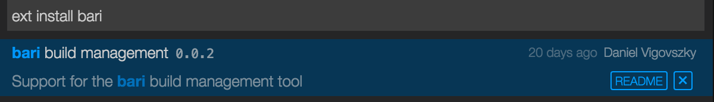

Bari with Visual Studio Code
Intro
A few weeks ago I discovered Visual Studio Code and started using it for some of my work. (Note: I’m using multiple editors/IDEs all the time, based on the task; Emacs, Sublime, Atom, IntelliJ, VS, etc.) So far Code is my favourite among the set of similar editors, such as Atom. I was pleasently surprised how well it works with its integrated OmniSharp plugin on bari’s codebase, so I decided to try to write a bari plugin for it.
Writing an extension for Code was a nice experience. The outcome is the bari build management extension, which I’ll demonstrate in the next section.
Developing .NET applications with Visual Studio Code and bari
As Code is multiplatform, and bari also works with Mono, I’ll demonstrate how you can use these tools to develop a .NET application (actually bari itself) on a Mac. The steps here (except installing Mono) would be the same on Windows or Linux as well.
Installing the tools
First, if you are not on Windows, you’ll have to install the latest Mono framework. On OSX I recommed to use brew to do that:
brew install mono
mono --versionThen get the latest Visual Studio Code version, either by downloading it from its homepage or with brew cask:
brew cask install visual-studio-codeGet the latest bari. On Windows I recommend downloading and extracting the latest official release and adding it to the PATH.
On OSX, with mono we already have nuget, so let’s use that:
cd /opt
nuget install bari-mono
ln -s bari-mono.1.0.2.2 bariand create a script to execute it somewhere in your PATH:
#!/bin/sh
mono /opt/bari/tools/bari.exe $@That’s it. Future versions of the bari extension will probably be able to install bari itself.
Let’s start Code now!
Installing the extension
Open the command palette (F1, or ⇧⌘P) and type ext install bari

{kind=link}
Loading the project
After that restart the editor. Have your bari-built project available somewhere. As we are going to develop bari itself, let’s clone its repository:
git clone https://github.com/vigoo/bari.gitThen open the result bari directory with Code. This should look like the following:
{kind=link}
The bari plugin automatically detected that the opened folder has a suite.yaml in its root, and loaded it. That’s why we can see the two sections on the statusbar’s right side: full and debug. The first one is the selected target product and the second one is the selected goal. All the bari commands provided by the extension will be executed with these settings.
Changing the target
To change the active product or goal, you can click on the statusbar or use the command palette (F1, or ⇧⌘P) and choose bari: Change goal or bari: Change target product.
Let’s change the goal to debug-mono, as we are working on a non-Windows environment:
{kind=link}
Generating the solution
The next step before starting coding is to actually generate the solution and projects files (and fetch the dependencies, etc.) so OmniSharp can load it and provide code completion, analysis, etc. features.
To do so, just use the command palette and choose bari: Regenerate solution, which runs the bari vs command with the correct parameters. The command’s output is displayed in an output panel called bari. This looks like the following:
{kind=link}
There’s nothing else left than pointing OmniSharp to the generated solution, with the following command:
{kind=link}
It will automatically find the generated .sln file, just select the correct one:
{kind=link}
In a few seconds (and with a few warnings for this project), OmniSharp works. To see what it can do, check this page. A simple example is to jump to a given class or interface with ⌘P:
{kind=link}
Working on the project
You can work on the project and build it from Code or run its tests using the bari: Build and bari: Test commands. The build output will be shown just like in the solution generation step.
{kind=link}
Whenever the suite definition itself must be modified, you can jump there with the bari: Open suite.yaml command and then just regenerate the solution as it was shown above.
Implementation
The implementation was really straightforward. The source code can be found here. It’s basically a JSON defining how the plugin is integrated and some implementation code in TypeScript. It’s easy to run and debug the plugin from Code itself.
For example the following section from the extension definition describes what events triggers the extension:
"activationEvents": [
"onCommand:bari.build",
"onCommand:bari.test",
"onCommand:bari.vs",
"onCommand:bari.openSuiteYaml",
"onCommand:bari.selfUpdate",
"onCommand:bari.goal.changeCurrentGoal",
"onCommand:bari.goal.changeCurrentProduct",
"workspaceContains:suite.yaml"
],It’s either done by invoking one of the defined commands from the command palette, or if the opened workspace contains a suite.yaml. The latter enables the extension to parse the suite definition and initialize the statusbar immediately one the suite has been opened.
The package definition also specifies the provided configuration values, such as:
"bari.commandLine": {
"type": "string",
"default": "bari",
"description": "Command line to execute bari"
},
"bari.verboseOutput": {
"type": "boolean",
"default": false,
"description": "Turns on verbose output for all the executed bari commands"
}The implementation itself is really simple, all the user interface elements involved such as the console output window, the command palette, the statusbar panels can be easily managed.
For example the panel showing bari’s output is created by the following code snippet:
var channel = vscode.window.createOutputChannel('bari');
channel.show();Or to display the result of an operation:
vscode.window.showErrorMessage("No suite.yaml in the current workspace!")or to create the statusbar panel:
this.goals = vscode.window.createStatusBarItem(vscode.StatusBarAlignment.Right);
this.goals.command = 'bari.goal.changeCurrentGoal';
this.goals.show();This API is simple and well documented enough so basic integrations like this can be done in an hour.
comments powered by Disqus